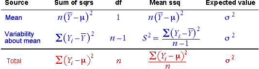

Basic sums of squares table
The relationship between the individual squared differences from µ and their sum is displayed in the following table.
Note that the degrees of freedom for the chi-squared distributions of the components also sum to that of the total, as do the means of the distributions.
Another way to split the total sum of squares
The previous page showed a second way to split the total sum of squares. It can also be shown in a sum of squares table,
As before, in each column, the values add to give the red 'total' value.
Distribution of ssq about the sample mean
The sum of squares for the mean has one degree of freedom since it is a single squared quantity. Therefore the sum of squares about the mean has (n - 1) degrees of freedom.
Mean sums of squares
Since the mean of a chi-squared distribution equals its degrees of freedom, we can divide any sum of squares by its degrees of freedom to get an estimate of σ2. This can be shown with an extra column of mean sums of squares on the sum of squares table,

The mean sum of squares about the sample mean is the same as the sample variance (the square of the sample standard deviation).
This explains why we use the divisor (n - 1) rather than n when estimating a standard deviation or variance.
Distribution of mean sums of squares
Since they are simply the sums of squares divided by their degrees of freedom, the mean sums of squares also have chi-squared distributions, but with a different scaling factor. In particular,

Simulation
The top of the following diagram shows a sample from a normal population.
The bottom of the diagram shows the theoretical chi-squared distribution for the sample variance. Click Accumulate, then take several samples to build up the sampling distribution of S2 and verify that it matches the theory.
Use the pop-up menu to adjust the sample size and observe that the spread of S2 becomes lower as the sample size increases — it becomes a more accurate estimator of σ2.
Finally, use the slider at the top to adjust the population variance, σ2. Observe that this simply scales the distribution of S2.
Sample variance and standard deviation
Note that the sample variance, S2, has a skew distribution with a long tail towards the high values.
The sample standard deviation, S, has a distribution that is closer to symmetric (since square root transformations reduce the size of a distribution's right tail). However, despite this, much of the theory of statistics is easier for sums of squares and variances than for their square roots, so we will give little mention to standard deviations in the remainder of this chapter.